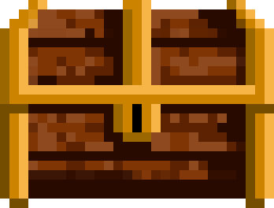

Vetor em jogos: o que muda
Objetivo: entender o que o vetor ganha e o que ele cobra em relação à pixel art.
Uma imagem vetorial não guarda pixels: guarda pontos, curvas e preenchimentos. Por isso ela pode ser exportada em qualquer tamanho sem serrilhar. O baú do castelo foi desenhado em pixel; abaixo, o mesmo baú reconstruído em vetor.

| Pixel art | Vetor | |
|---|---|---|
| Unidade de trabalho | O pixel, na grade | A forma (ponto, curva, preenchimento) |
| Mudar o tamanho | Só em escala inteira; redesenhar para outra resolução | Livre, sem perda |
| Animação típica | Quadro a quadro (P2) | Partes com ossos, recorte (V2) |
| Risco | Pixels soltos, jaggies | Detalhe demais, traço que muda de espessura, “cara de clip-art” |
Illustrator essencial para jogo
Objetivo: preparar um documento que já sai na escala do jogo.
- Arquivo → Novo, aba Web, unidade pixels, modo de cor RGB.
- Trabalhamos em 4× o tamanho do jogo: 1 tile do jogo (32 px) = 128 px na prancheta. Prancheta do herói: 256 × 256 (= 64 × 64 no jogo).
- Editar → Preferências → Guias e grade: linha de grade a cada 128 px, 4 subdivisões. Visualizar → Mostrar grade.
| Ferramenta | Atalho | Para quê |
|---|---|---|
| Seleção / Seleção direta | V / A | Mover formas inteiras / mover pontos e alças. |
| Retângulo / Elipse | M / L | As formas-base de quase tudo. Use os cantos dinâmicos (bolinhas internas) para arredondar. |
| Construtor de formas | Shift+M | Arrastar sobre regiões sobrepostas une; com Alt, apaga. |
| Pathfinder | Janela → Pathfinder | Unir, subtrair, interseccionar formas selecionadas. |
| Caneta | P | Curvas que as formas não resolvem (cabelo, capa, folha). |
| Camadas | Janela → Camadas | Uma camada por parte do personagem. |
Baixe o kit de estudo. No painel Amostras, menu → Abrir biblioteca de amostras → Outra biblioteca… → paleta_castelo.ase. Arraste as cores para o painel: elas entram como amostras globais.
Construção por formas
Objetivo: desenhar sem caneta tudo o que as formas resolvem.
O método da pista vetorial: decompor o objeto em formas simples, sobrepor, unir ou cortar com o Construtor de formas e só no fim colorir. A caneta entra para o que sobrar.
Olhe a porta e a caixa do castelo (no kit). Em papel, desenhe cada uma só com retângulos, círculos e triângulos. Quantas formas cada uma precisa?
Paleta, amostras globais e sombra chapada
Objetivo: colorir de um jeito que se possa mudar o jogo inteiro em um clique.
Uma amostra global é uma cor com nome que fica ligada a tudo o que a usa. Mudou a amostra, mudou cada forma pintada com ela — em todas as pranchetas.
- Três tons por material: base, sombra e luz. É assim que o baú da Sala 03 foi pintado.
- Sombra chapada: uma forma de cor mais escura por cima, sem degradê. Lê melhor pequeno e anima sem “escorregar”.
- Luz de cima, igual ao castelo. Sombra embaixo e no lado oposto.
- Contorno em marrom ou roxo escuro, não preto puro: o castelo usa
#280a00.
Pinte três formas com a amostra ouro_2. Clique duas vezes na amostra, mude a cor e veja as três mudarem juntas. Se não mudaram, a opção Global da amostra está desligada.
Silhueta e linguagem de formas
Objetivo: escolher as formas do personagem pelo que elas comunicam.
Antes do detalhe, o jogador lê a forma geral. Há uma convenção forte no design de personagens:
O rei do castelo é largo e quadrado (coroa, barba, martelo): firme. Os porcos são redondos: inimigos mais engraçados que assustadores. O teste de silhueta vale também no vetor: pinte tudo de preto e veja se ainda se reconhece.

O personagem em partes
Objetivo: desenhar o herói já pronto para ser animado com ossos na V2.
Na pista vetorial o personagem é animado por recorte: cada parte é uma imagem separada que gira em torno de um pivô, como um boneco de papel com colchetes.
| Regra | Por quê |
|---|---|
| No mínimo seis partes: cabeça, tronco, dois braços, duas pernas. | É o mínimo para andar, pular e atacar na V2. |
| Pontas arredondadas que passam do pivô (sobreposição). | Quando o braço gira, não abre buraco entre ele e o ombro. |
| Pivô na junta: ombro, quadril, pescoço. | A parte gira de onde gira um corpo de verdade. |
| Partes de trás um tom mais escuras. | Separa os membros de trás dos da frente sem precisar de contorno extra. |
| Cada parte numa camada, com nome. | Na exportação cada camada vira um arquivo. |
pivos com um círculo pequeno em cada junta. Ela não é exportada, mas vai dizer a você (e ao Godot, na V2) onde fica cada eixo.Redesenho guiado: um objeto do castelo
Objetivo: treinar o método redesenhando um objeto do castelo e começar a arte do seu jogo — Atividade V1.1.
Escolha um dos três objetos do kit de estudo. O objetivo não é copiar pixel por pixel, e sim traduzir: as mesmas partes e cores, construídas com formas.
- Prancheta de 128 × 128 (baú, caixa) ou 256 × 256 (porta). Coloque a referência numa camada travada, com 30% de opacidade.
- Decomponha: tampa, corpo, aros, fecho (ou batente, folha, maçaneta). Só retângulos, elipses e cantos dinâmicos.
- Una o contorno externo com o Construtor de formas.
- Pinte só com as amostras globais do castelo: base primeiro.
- Acrescente formas de sombra e de luz chapadas, com luz vindo de cima.
- Contorno de 8 px em
contorno_1no contorno externo. - Reduza o zoom até o objeto ficar do tamanho do jogo (25%). Ainda se entende o que é?
- Abra o seu GDD da C1 na tabela “No castelo → No seu jogo”: quem é o herói, o inimigo comum, o inimigo de longe e o chefão do seu mundo?
- Crie o grupo de amostras globais do seu jogo: três tons por material e uma cor de contorno.
- Numa prancheta de 1024 × 256, rascunhe em preto, só com formas, a silhueta dos quatro personagens lado a lado. Anote a forma dominante de cada um (Sala 05).
Exportar para a engine
Objetivo: gerar os arquivos com os nomes e o formato que o Godot e a trilha esperam.
- Agrupe cada peça (Ctrl+G) e abra Janela → Exportar ativos.
- Arraste cada grupo para o painel e dê o nome no padrão da trilha.
- Em Configurações de exportação, deixe PNG, escala 1x (o documento já está em 4×) e acrescente SVG.
- Clique em Exportar e escolha a pasta
arte/do seu projeto.
| Padrão de nome | Exemplos |
|---|---|
tipo_nome_parte.pngminúsculas, sem acento, sem espaço | objeto_bau_fechado.png · heroi_robo_cabeca.png · heroi_robo_braco_frente.png · cenario_plataforma_meio.png |
.ai com camadas e amostras globais é o arquivo-mestre. Os PNG são “impressões” dele: se algo mudar, você muda o .ai e exporta de novo.- O objeto redesenhado em
.ai, com camadas nomeadas. - PNG e SVG exportados pelo painel Exportar ativos.
- Uma imagem lado a lado: referência em pixel e o seu vetor.
- As amostras do seu jogo e a prancheta com as silhuetas do seu elenco (PNG).
Onde estamos na trilha
 C1GDD ✓V1Vetor ◂ vocêV2RiggingV3FaseC2EngineC3MecânicasC4ÁudioC5Publicação
C1GDD ✓V1Vetor ◂ vocêV2RiggingV3FaseC2EngineC3MecânicasC4ÁudioC5PublicaçãoAs partes do herói que você desenha nesta semana ganham ossos na V2. Os elementos de cenário viram camadas da fase na V3.